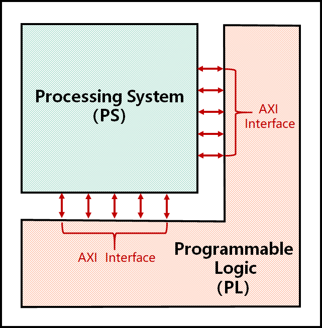
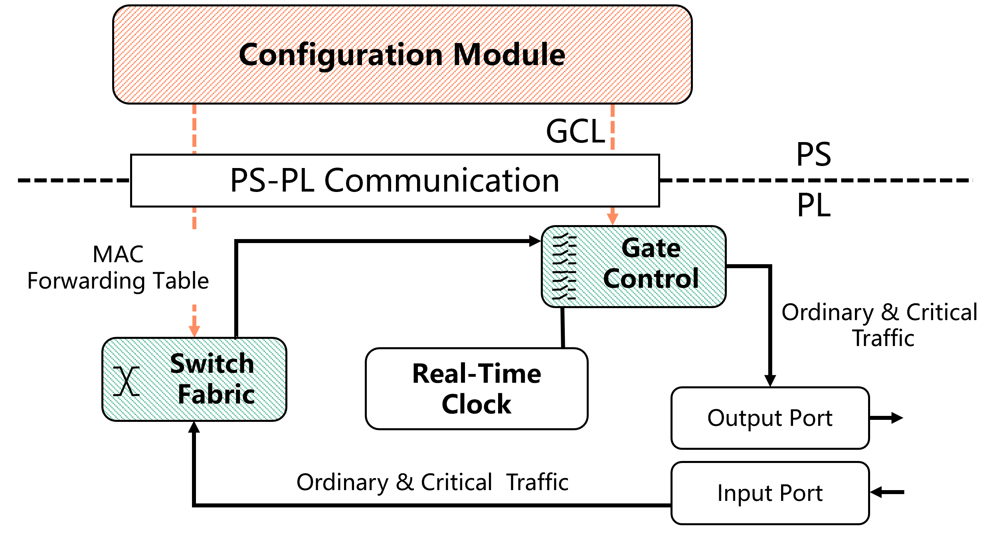

System Design #
The CaaS/TSN Switch is developed based on the ZYNQ platform. The diagram below shows the composition of the ZYNQ chip. ZYNQ mainly consists of a Processing System (PS) and Programmable Logic (PL). The PS and PL mainly communicate with each other through the high-performance Advanced eXtensible Interface (AXI), which is more efficient than using FPGA directly as a peripheral. The PS contains an ARM-based processor suitable for running applications, drivers, and operating systems, while the PL contains FPGA suitable for running low-level hardware logic with high real-time performance requirements.

For the Switch, the PL part mainly implements:
- the real-time clock module and timestamp cache module in time synchronization;
- the basic forwarding function and traffic control function of the switch.
The PS part mainly implements:
- the state machine logic related to time synchronization;
- the configuration program of the switch.
Time Synchronization #
Please refer to the Wikipedia for basic knowledge about clock synchronization .
The TSN switch complies with IEEE 802.1AS standards. It synchronize neighbor clocks in a decentralized manner and achieves clock accuracy in the sub-microsecond range, making it suitable for measurement and control systems. For each pair of connected devices, their time synchronization state machine will measure link delay and update their local RTC (real-time clock) according to Master clock.
The overall design of the time synchronization module is shown in the diagram below. The PS mainly consists of time synchronization state machine modules, which mainly run the state machine logic defined in the 802.1AS standard. The PL mainly consists of real-time clock modules and timestamp cache modules, which are mainly responsible for running the real-time clock and recording the time when data frames enter and exit the switch port.

After the data frame enters the PL from the input port of the switch, the timestamp cache module will record and cache the timestamp when the data frame enters the hardware. The switch’s exchange module will determine whether the data frame is related to time synchronization. Time synchronization data frames will be forwarded from the PL to the PS for processing through the Direct Memory Access (DMA) channel. In the PS, the time synchronization state machine module needs to obtain the real-time clock information of the underlying PL and the hardware timestamps corresponding to different data frames through the AXI4-Lite interface. When the switch needs to send time synchronization-related data frames, the PS is responsible for encapsulating the sent data frames and then forwarding them to the PL for processing through the DMA channel. Since time synchronization also needs to record the sending time of messages such as Sync and Pdelay_Req, the timestamp cache module will still cache the sending timestamp before the data frame is sent from the output port, so that the PS can use it later.
Switch Fabric & Gate Control #
The overall design of the switch fabric and gate control module is shown in the diagram below. The PS part mainly includes a configuration module, which is used for software-level configuration of the switch’s Gate Control List (GCL) and MAC forwarding table; the PL part mainly consists of the switch fabric and the gate control module, which are responsible for port forwarding and real-time control of traffic.

After the data frame enters the PL from the input port, both ordinary traffic and key traffic will enter the switch fabric. The switch fabric will look up the corresponding output port based on the destination MAC address in the data frame, and then put the data frame into the priority queue in the gate module. The gate control module will control the gate state of each priority queue according to the pre-configured GCL, and then forward the data frame from the corresponding port. In the above process, the gate control module needs to obtain the globally synchronized time from the time synchronization module. The configuration module in the PS part mainly modifies the registers related to GCL (tsn_drivers\gcl.c) and MAC forwarding table (tsn_drivers\switch_rules.c) through the UIO driver and AXI4-Lite interface, thereby controlling the parameters in the switch fabric and gate module in the PL part.
Source Code Description #
Time Sync State Machine #
The main function for time synchronization is located in time_sync_main_loop.c. It is implemented based on IEEE 802.1AS 2020 standard. The following table introduces the relationship between the state machine code in the code and the state machine in the standard.
| Code Filename (.c/.h) | Corresponding Section in 802.1AS-2020 |
|---|---|
| site_sync_sync_sm | 10.2.7 SiteSyncSync |
| port_sync_sync_receive_sm | 10.2.8 PortSyncSyncReceive |
| clock_master_sync_send_sm | 10.2.9 ClockMasterSyncSend |
| clock_master_sync_receive_sm | 10.2.11 ClockMasterSyncReceive |
| port_sync_sync_send_sm | 10.2.12 PortSyncSyncSend |
| clock_slave_sync_sm | 10.2.13 ClockSlaveSync |
| port_announce_information_sm | 10.3.12 PortAnnounceInformation |
| port_state_selection_sm | 10.3.13 PortStateSelection |
| port_announce_information_ext_sm | 10.3.14 PortAnnounceInformationExt |
| port_announce_transmit_sm | 10.3.16 PortAnnounceTransmit |
| md_sync_receive_sm | 11.2.14 MDSyncReceiveSM |
| md_sync_send_sm | 11.2.15 MDSyncSendSM |
| md_pdelay_req_sm | 11.2.19 MDPdelayReq |
| md_pdelay_resp_sm | 11.2.20 MDPdelayResp |
UIO addresses #
The UIO driver is mainly used to map logical addresses to physical addresses, thereby controlling the registers of modules such as TSU, RTC, GCL, etc. The driver code is located in the tsn_drivers folder. The correspondence between the register addresses in the software part and the hardware are described in the header files.
For example, in the tsn_drivers\rtc.h file, the address of the RTC module is defined as follows:
// define RTC address values
#define RTC_CTRL 0x00000000
#define RTC_NULL_0x04 0x00000004
#define RTC_NULL_0x08 0x00000008
#define RTC_NULL_0x0C 0x0000000C
#define RTC_TIME_SEC_H 0x00000010
#define RTC_TIME_SEC_L 0x00000014
#define RTC_TIME_NSC_H 0x00000018
#define RTC_TIME_NSC_L 0x0000001C
#define RTC_PERIOD_H 0x00000020
#define RTC_PERIOD_L 0x00000024
#define RTC_ADJPER_H 0x00000028
#define RTC_ADJPER_L 0x0000002C
#define RTC_ADJNUM 0x00000030
#define RTC_OFFSET_S_H 0x00000034
#define RTC_OFFSET_S_L 0x00000038
#define RTC_OFFSET_NS 0x0000003C
MAC Forwarding #
The MAC address forwarding table configured in the switch_rules.c/h file actually operates the registers in swtich datapath and gate control list. These registers are in pairs, the first register represents the network byte order of the last 32 bits of the destination MAC address, and the second register represents the forwarding port.
The CaaS switch has 7 ports, of which 4 are external physical ports, and 3 are virtual ports inside the switch connecting PL and PS. The 3 internal virtual ports specifically include:
- Time Synchronization DMA: Used for transferring time synchronization data frames between PS and PL.
- PS ETH: Used for communication between PL’s physical network port and PS’s operating system (for example, using an SSH client to remotely log in and access the switch’s PS).
- PLC DMA: Used in CaaS to transfer input and output of control tasks.
The following interface is provided to control the switch fabric’s forwarding rule:
int push_switch_rule(char *mac_addr, int output_port) {
/*
Push a switch rule to the rule table
mac_addr: 6 byte destination mac address.
output_port: 0 -> to Port 0
1 -> to Port 1
2 -> to Port 2
3 -> to Port 3
4 -> to PLC DMA
The switch rule for PTP frames are fixed in hardware, no need to specify explicitly.
*/
...
}
Gate Control #
TSN critical traffic data frames adopt the standard VLAN data frame format, and the priority is defined in the VLAN tag. VLAN refers to Virtual Local Area Network technology, defined in the 802.1Q standard. As shown in the figure below, the standard VLAN data frame contains a 4-byte VLAN tag, the TPID field represents the VLAN data frame type (0x8100), and the priority of critical traffic is defined in the PRI field, with a value range of [0, 7], corresponding to 8 priority queues. The output queue module identifies the priority of data frames based on the VLAN field in the critical data frame, and then places the data frame in the corresponding output port’s priority queue waiting for transmission.
Notice: According to the IEEE 802.1Qbv standard, priority = 1 maps to priority 0; priority = 0 maps to priority 1; other priorities map to the corresponding queues. Therefore, normal traffic will default to entering priority queue 1 of the corresponding port.
The CaaS Switch’s gate control module implements the Time Aware Shaper defined by 802.1Qbv, which is used to execute hardware gate scheduling according to the TSN schedule table configured by PS, to ensure the deterministic transmission of critical traffic.
Our GCL is represented by 9 bits, with the highest bit representing whether the Guardband is enabled, and the remaining 8 bits representing the gate switches. For example, 9'1_0000_0001 means that the Guardband is enabled, and only the gate switch of the first queue is open.
Notice that the time unit of GCL in hardware is 2^11 ns, while the time unit in the configuration file issued is 2^14 ns.
The following interfaces in gcl.c/h are provided to get/set the hardware GCL (set the gate state and time interval seperately):
/**
* @description: This function is used to get gcl values of the port [portNumber].
* @param {uint16_t} portNumber port's number.
* @return {*} 0 by default.
*/
int get_gcl(uint16_t portNumber) {
...
}
/**
* @description: This function is used to set GCL's value, set port [portNumber] 's GCL[gcl_id] to [value].
* @param {uint16_t} portNumber port number, start from 0.
* @param {uint16_t} gcl_id GCL index.
* @param {uint16_t} value the GCL value to set.
* @return {*} 0 by default.
*/
int set_gcl(uint16_t portNumber, uint16_t gcl_id, uint16_t value) {
...
}
/**
* @description: This function is used to get all GCL time intervals of port [portNumber]. Consider we get time interval is x, the real time interval is (x * 2^8 * 8) nanoseconds.
* @param {uint16_t} portNumber port number, start from 0.
* @return {*} 0 by default.
*/
int get_gcl_time_interval(uint16_t portNumber)
{
...
}
/**
* @description: This function is used to set GCL's time interval, set port [portNumber] 's GCL time interval[gcl_id] to [value].
* @param {uint16_t} portNumber port number, start from 0.
* @param {uint16_t} gcl_id GCL index.
* @param {uint16_t} value the GCL time interval x to set. The real time interval is (x * 2^8 * 8) nanoseconds.
* @return {*} 0 by default.
*/
int set_gcl_time_interval(uint16_t portNumber, uint16_t gcl_id, uint16_t value)
{
...
}